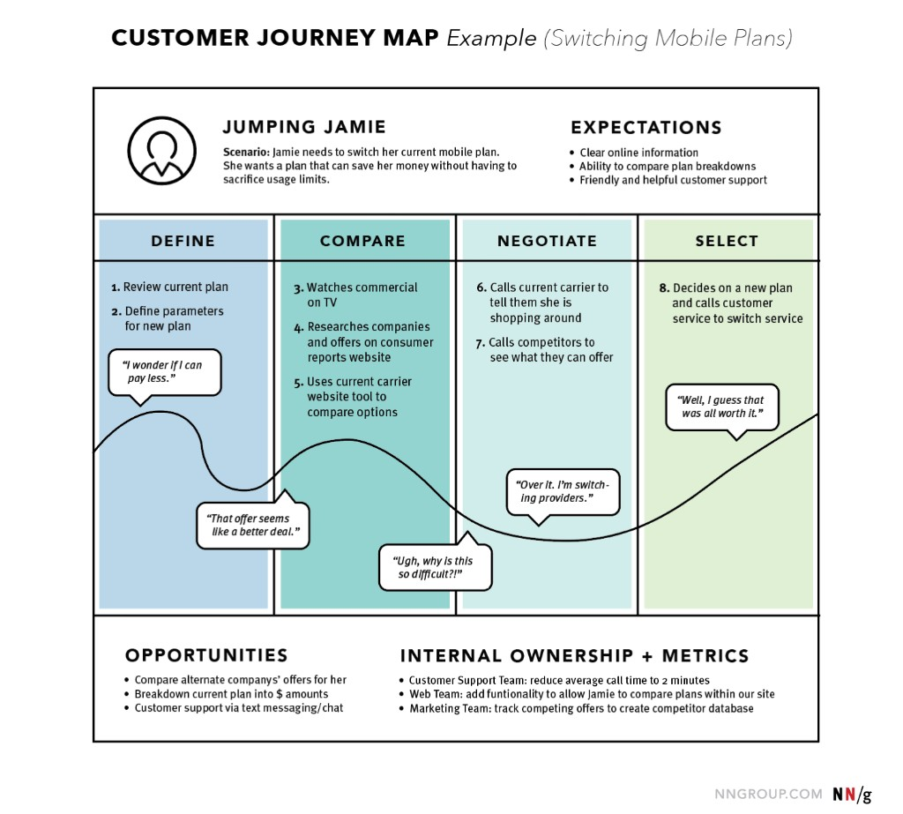

Where AI Helps on a Small Business Website (And Where It Ruins It)
Used thoughtfully behind the scenes, AI can save you time. Left unchecked on the surface of your website, it can make a good business look careless.
If you work in digital design right now, you see AI everywhere. In my own product design and development work, AI tools help me move faster through early exploration, organize research notes, untangle rough ideas, and speed up repetitive coding tasks so I can spend more energy on real problems.
For a small business owner or independent freelancer, though, the advice around AI often sounds like two extremes: either “AI will build your entire website in ten minutes” or “AI is ruining everything.”
Neither is very helpful when you are trying to get clients, look credible, and run a real business. The truth sits in the middle. Used thoughtfully behind the scenes, AI can save you time and mental energy. Left unchecked on the surface of your website, it can make a good business look careless, generic, and easy to skip past.
Here is where AI actually helps on a small business website, and where it quietly gets in the way.
Where AI helps
1. Untangling rough ideas before you write
Starting with a blank page is hard when you already spend your day serving clients or running operations. AI is genuinely useful as a thinking partner to get past that first blank screen.
- What works: dumping rough notes about what you do, who you help, and what questions customers always ask, then asking for a simple page outline or a few ways to organize your sections.
- Why it helps: it gives you structure faster so you can focus on saying things clearly in your own voice.
2. Speeding up routine and behind-the-scenes prep
Good websites rely on plenty of unglamorous groundwork: drafting a checklist of pages you need, organizing FAQ topics, summarizing customer feedback, or spotting missing details in a rough draft.
- What works: using AI to brainstorm common client objections, organize rough notes, or help a designer and developer move faster on repetitive setup work.
- Why it helps: it reduces friction in the background so human judgment can go toward layout, clarity, and polish.
3. Testing whether your message is clear
When you know your business inside and out, it is easy to write sentences that only make sense to insiders. AI can act as a quick sanity check on whether a paragraph sounds stiff, overly wordy, or confusing.
- What works: asking “How would a first-time visitor read this?” or “Where is this sentence unclear?”
- Why it helps: it helps you catch jargon before real customers run into it.
Where AI ruins it
1. Obvious AI photos instead of real proof
This is one of the fastest trust-killers on small business websites. When a local clinic, salon, consultant, or studio uses glossy, uncanny AI images instead of real photos of their work, their space, or themselves, visitors notice right away.
- Why it hurts: small businesses win trust through reality and craft. Fake-looking visuals make people wonder what is being hidden behind the screen.
- What to do instead: use real photos of your actual work, your workspace, or yourself. Even a clean, well-lit photo taken on a phone beats an artificial image that feels disconnected from your business.
2. Robotic, copy-pasted marketing language
You have probably seen it dozens of times: headlines packed with phrases like “unlock your potential,” “seamless solutions,” or “elevate your journey.” Even when people do not use the word “AI,” that stiff, interchangeable tone feels hollow.
- Why it hurts: if your website sounds like every other site on the internet, visitors have no reason to remember you or believe you understand their specific situation.
- What to do instead: write the way you actually explain your work to a client in person. Plain, specific language builds confidence much faster than polished fluff.
3. Unedited template layouts that skip real UX
AI builders can generate a neat-looking layout in seconds, complete with placeholder sections, generic buttons, and tidy grids. The catch is that a pretty layout is not the same as a clear user journey.
A user journey map is how you collect the real touchpoints of a business. Not only the homepage, but the search that got someone there, the first screen on a phone, the moment they compare you with someone else, the call, the booking, and the follow-up. When those steps sit in a line, you see where people hesitate and where the website has to earn trust. AI cannot invent that map. It does not know which service pays the bills, what a first-time visitor is afraid of, or which button they actually try to tap.
The picture below is a classic example from NN/group. It is about switching a mobile plan, not about your shop or studio. Still, it shows the point: a person moves through a decision with thoughts, actions, and a business that has to keep up. Your site lives on that path. If you skip the journey, you skip the places where a client is won or lost.

- Why it hurts: a template does not know which service makes you money, what makes a first-time visitor hesitant, or what happens on a small phone screen when someone tries to call or book.
- What to do instead: start with what the visitor needs to see first, keep navigation simple, and make sure the next step (booking, calling, asking for a quote) is effortless.
A simple rule of thumb
Let AI help you prepare and think faster, not pretend and perform on your behalf.
Your website does not need clever tricks or endless features. It needs honest proof, clear words, calm structure, and an easy way for the right people to reach out. When those pieces are real, your website feels human, and that is what makes people trust you enough to hire you.

Octavia Sirbu
Independent designer and developer
Want a clear, human website without the clutter?
If you are building or updating a website for your business or freelance practice and want something fast, clear, and tailored to how real customers actually browse, book a free 15-minute project chat. We can look at where your current site stands and map out a practical next step.
Book a free 15-minute project chat